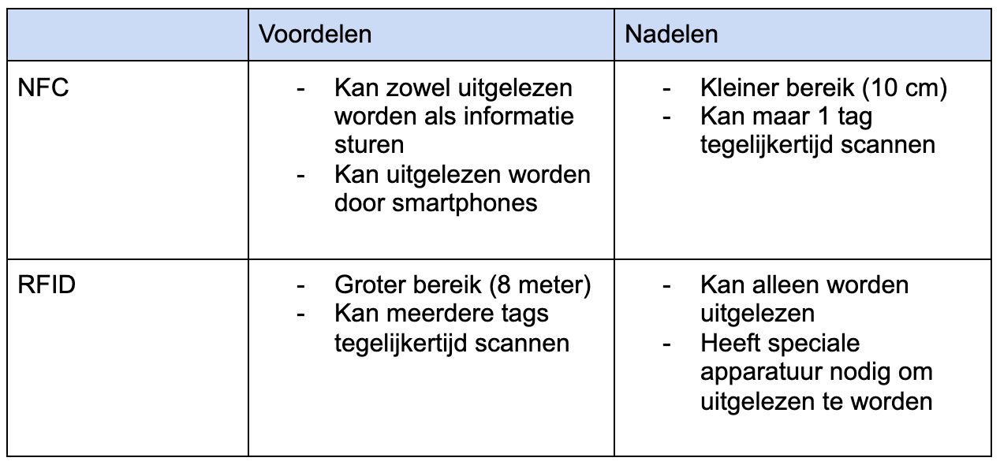
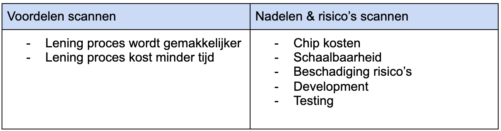

Identiteit koppelen aan sportspullen
Op dit moment worden vluchtelingen handmatig in de app gekoppeld aan de sportspullen die aan ze worden uitgeleend door de naam van de vluchteling in een lijstje te zoeken en te selecteren. In dit onderzoek gaat er gekeken worden naar mogelijkheden om het proces van het uitlenen en terugbrengen van sportspullen te versnellen en te vergemakkelijken voor zowel de clubhuis begeleiders als voor de vluchtelingen zelf.
Hoe kan deze identiteit van vluchtelingen gekoppeld worden aan de uitgeleende sportspullen?
Momenteel hebben vluchtelingen een unieke identiteit in de vorm van een willekeurig gegenereerde id die wordt aangemaakt wanneer een vluchteling als member wordt toegevoegd aan het systeem via de app.
Het idee vanuit OWOW is om de vluchtelingen een armbandje mee te geven, deze kan met behulp van de app gescand worden waardoor de id van de vluchteling hieraan gekoppeld wordt en zodra de sportspullen worden terug gebracht hoeft deze alleen gescand te worden en doet de app de rest van het werk. Hiervoor is echter een draadloze communicatie techniek nodig om deze verbinding te maken. Het armbandje is als voorbeeld gebruikt maar hier kunnen ook andere vormen gebruikt voor worden.
Door middel van literatuuronderzoek zal er onderzocht worden welke draadloze communicatie techniek het best in deze context gebruikt kan worden.
Volgens NFC world (NFC World, z.d.) zijn er 4 grote verschillen tussen NFC en RFID, deze verschillen zullen hieronder vermeld worden en per verschil zal er gekeken worden wat dit betekent in de context van de Klabu. Op basis van deze bevindingen zal er een uitspraak gedaan worden over welke draadloze communicatie techniek meer geschikt is als oplossing.

Conclusie verschillen
Uit de resultaten is gebleken dat er meerdere verschillen tussen NFC en RFID zijn maar deze over het algemeen geen grote invloed hebben in de context van Klabu. Er is echter 1 verschil die belangrijk ik bij het maken van deze beslissing en dat is dat NFC tags eenvoudig met de telefoon uitgelezen kunnen worden terwijl er speciale apparatuur nodig is voor RFID. Om deze reden is de NFC chip een betere optie aangezien er vanuit Klabu weinig budget is om dit op te vangen.
Verder is er ook gekeken naar de voordelen, nadelen en risico's die komen kijken bij het implementeren van deze techniek in de praktijk. Hieruit zijn verschillende bevindingen gekomen die hieronder zijn genoteerd.

Conclusie voor-en-nadelen
Ookal het toepassen van de NFC techniek in theorie het uitleningsproces verbeterd, betekent dit niet dat het in de praktijk ook
realistisch uitvoerbaar is wegens de kosten die hier bij komen kijken. Aangezien Klabu een non-profit organisatie is, is er weinig budget
om deze techniek in de praktijk waar te maken. Het aanschaffen van de chips en deze aan te vullen wanneer er door externe factoren een grotere vraag ontstaat voor het uitlenen van
sportspullen, kost Klabu geld en aandacht, terwijl het gebruiken maken van NFC chips niet noodzakelijk is voor de werking van de app en het koppelen van de identiteit van de vluchtelingen aan de uitgeleende sportspullen al manueel wordt gedaan.
Uit het onderzoek is gebleken dat het gebruik maken van NFC chips de meest effectieve draadloze communicatie techniek is in de context van Klabu om de identiteit van de vluchtelingen te koppelen aan de uitgeleende sportspullen en het uitleningen proces te verbeteren. Echter wordt er in de huidige situatie van de ontwikkelde app al gebruik gemaakt van het toevoegen van een willekeurig gegenereerde id van een vluchteling aan een booking. Omdat het gebruik maken van een NFC scanner een hoop nadelen en risico’s met zich mee brengt die zwaarder wegen dan de voordelen, adviseer ik geen gebruik te maken van de NFC scanner en het koppelen van de identiteit van vluchtelingen aan de sportspullen handmatig te doen zoals het in de huidige situatie van de app gedaan word. Wanneer Klabu of OWOW er toch voor kiest om deze techniek in te zetten, adviseer ik dit te doen door middel van NFC.
Luuk van Ettinger. (13-11-2021). identiteit koppelen aan sportspullen onderzoeksdocument. Geraadpleegd op 13 november 2021, van
https://docs.google.com/document/d/1kP2SUWG8ZCsTcUAbI97zgyyiQ8fp89yqO2CLl6lFlf4/edit?usp=sharing
NFC World. (z.d.). Geraadpleegd op 13 november 2021, van
https://nfcw.nl/blog/rfid-vs-nfc-4-verschillen-tussen-rfid-en-nfc/